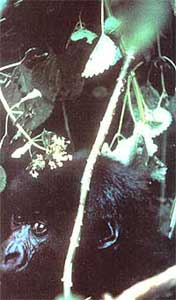

The Marvelous Mountain Gorillas
May/June 1984
On MOTHER's recent visit to Tanzania and Rwanda, we discovered, surprisingly enough, that tourists may offer the best(and probably
the last) hope of saving. . .
More than 120,000 people are living off a two-kilometer strip of land bordering Rwanda's Virunga Volcanoes National Park, the home of the rare and mighty mountain gorillas (Gorilla gorilla beringei). In fact, almost every available spot of earth in this tiny, central African country has been divided into small plots of corn, peas, pineapples, bananas, and sorghum. Such plantings are staggered up to the very tops of the steep mountain slopes, and the intense cultivation makes one wonder where this nation, the most densely populated on the African continent, will ever find room to put the doubled population it expects within the next two decades!
AN ECOLOGICAL LESSON
Only a few years ago, 22,000 acres-or nearly half-of the thickly forested Volcanoes National Park, the first such reserve ever established in Africa, were given over to the cultivation of pyrethrum. (This white daisylike chrysanthemum is the source of a natural insecticide and provides Rwanda with one of its few cash crops.) Shortly thereafter, residents found that, as a result of the destruction of so much of the precipitationproducing rain forests, the surface streams in the area had dried up. For the first time, then, the local population began to become aware of the value of leaving this beautiful montane rain-forest ecosystem undisturbed.
Even so, the pressures being exerted upon the remaining park area are immense. The wooden stakes marking its boundaries are often surreptitiously moved back by local residents hoping to gain even a few more feet of farmland or a tree or two to cut for scarce cooking fuel. In spite of this, the money necessary to install more permanent cement boundary markers has been slow to materialize.
Poachers, too, are always a menace to the park's wildlife, which-in addition to its famous gorillas-includes nearly 100 forest elephants (rare, smaller relatives of the savanna pachyderm), buffalo, black-fronted and yellowbacked duikers, bushbuck (notable for their doglike bark), tree hyraxes, giant forest hogs, giant rats, and approximately 100 species of birds. Three other species of primates occupy the park-the blue monkey, the golden monkey, and Bosman's potto.
Gorilla poachers are often hired by unscrupulous zoos (both public and private) wanting a gorilla baby, and usually a whole family group is killed, as the adults will fight to the death to protect their young. The fact that gorillas give birth on average only every four to five years means that even limited poaching can have a disastrous effect on populations. While poaching for the gorillas themselves is still a problem in Rwanda, an even greater concern arises when local people, wishing to supplement their protein-poor diet, attempt to snare some of the park's antelope. Unfortunately, curious gorillas frequently lose a hand or foot in the traps and often end up dying of gangrene as a result. (One of the participants in MOTHER's tour to the gorilla's homeland accidentally tripped just such a snare.)
An internationally sponsored project now pays for guards to patrol the 30,000-acre refuge, and the ofcials do bring in a number of poachers each week, dealing with them fairly harshly. But there simply aren't enough guards, and there's very little money to provide those already on duty with such basic necessities as guns, ammunition, and uniforms. In addition, the park shares its borders with Uganda and Zaire, which have even poorer wildlife protection records than Rwanda does. (Zaire is now laying the groundwork for its own gorilla program, but it will need several years, additional outside staff, and much money if the program is to become effective.)
AN ECONOMIC VALUE
In a country already teetering on a nutritional tightrope, not even well-defined park boundaries, guards, and the widespread understanding of the danger of crop losses due to lack of water would be enough to save the park from the effects of out-of-control population growth. What may rescue 'the area from encroachment is the growing recognition that its 140 rare gorillas (there are just over 240 in the entire Rwanda/Uganda/ Zaire region) have a real economic value. The animals are Rwanda's greatest tourist attraction, and thus are a source of muchneeded foreign currency.
Two of Rwanda's 15 gorilla groupsfamily units that generally consist of one male "silverback" (so named because of the saddle of silver hair across his back), two to five females, and a number of offspring-have been studied by scientific researchers for many years. After finally recognizing the animals' tourist potential, the park personnel set out to "desensitize" three other groups (designated as #9, #11, and #13) by gradually exposing them to human beings. The entire process took up to a year and a half for each family.
In time, however, the gentle giants became accustomed to their daily visitors, first ignoring and then eventually interacting with them. (Though all of the guides are carefully trained in gorilla "good manners" and are able to imitate the animal's gruntlike language, only one person works with each family, whenever possible, because a group is quick to recognize and react to a change of guides.) In addition, no more than six people (paying a fee of $40 each) are allowed to visit a group on any given day, and even then the contact is usually limited to an hour or less.
In spite of the fact that every effort has been made to protect these three go rilla families from any excessive disturbance of their natural behavior and movements, they have, in a sense, been "sacrificed" for human enjoyment in an effort to save the habitat of their fellow primates. Since they no longer fear human intrusions, the desensitized animals are now even more vulnerable to being preyed upon by man, their only natural enemy.
AN UNFORGETTABLEEXPERIENCE
After you arrive at the park headquarters in northwestern Rwanda and obtain one of the few visitor's permits, getting to the gorillas themselves involves a ride of several miles on rough roads to a point near the forest that includes part of a family's seven-toten-squarekilometer territory. Then you may have to walk an hour or so across cultivated fields before actually entering the dense canopy of bamboo that covers the volcanoes' lower slopes. Once there, .it's frequently necessary to crawl on hands and knees through thick vines and nettles (gloves are essential); often the way can be made passable only with the aid of the guide's machete.
After your escort picks up the gorillas' easily recognized trail, you might have to follow it for several more exhausting hours, up steep slopes, through mud, and over vertical rock faces . . . perhaps to an elevation of over 10,000 feet. But it's possible to be more fortunate, as was our associate editor on the expedition taken by MOTHER's tour. Group #13 was found just ten minutes from the edge of a farmer's field, enjoying its midday relaxation/siesta period. (Gorillas are primarily vegetarian, though they have been known to eat insects, and they spend early mornings and late afternoons foraging for food.)
But whether the journey is easy or incredibly difficult, the sight of these wonderful creatures will make whatever effort and expense it takes to, get to them well worthwhile. A 400-pound silverback-with its large cranial crest and intelligent, glaring eyesis nothing short of awesome. What's more, if you obey the rules, you can observe this powerful patriarch and his family from a distance of just a few feet! Indeed, juvenilescovered with soft, brown, puppylike furdelight in showing off their wrestling skills, breaking off such matches occasion ally to indulge in some adult-style chest thumping. They're likely to tumble unconcernedly across your legs and may even stop to examine your hair, ear, or camera. The guides try to gently discourage this kind of interaction, since they fear that close contact may result it he transmission of human diseases. Nothing, in fact, will end a visit faster than for a visitor to start coughing. (On one occasion, however, an adult female gorilla surprised one of our guides by greeting him with a resounding kiss!) Other taboos are talking, smiling, staring, pointing, and-in the case of a gorilla charge-running. The first four actions will be interpreted by the animals as aggressiveness, and the fifth, while being a natural human instinct in the face of 400 pounds of screaming fury, is a terrible mistake that's likely to result in some bad bites on the backside!
Normally, though, the gorillas-even females with very young babies-seem remarkably at ease around camera-clicking intruders. They play, doze, feed, and climb trees with only passing glances and glares at their human companions, and if a family member does become a bit agitated, a few grunts from the guide seem to calm the animal immediately. Of course, this nonchalant behavior should never lure a visitor into thinking these are tame beings .. . though that attitude is extremely unlikely, since the gorillas' obvious strength is far too impressive to inspire anything but the greatest respect. And inevitably, along with that respect comes the deep desire to help these most magnificent and gentle creatures to survive in peace.
HELP FOR A VANISHING BREED
It is apparent to those of us who have had the rare privilege of being tolerated by the gorillas in their ever-shrinking forest home that they will not survive without a great deal of financial help. We at THE MOTHER. EARTH NEWS 9, along with Anne and Paul Ehrlich, our tour leaders on this African trip (who will be writing more about the gorillas in future Ecoscience columns), urge you to send contributions to African Wildlife Leadership Foundation, Dept. TMEN, 1717 Massachusetts Ave. N.W., Washington, D.C. 20036, and ask that the funds be directed to the support of The Mountain Gorilla Project in Rwanda. Currently, the budget for this undertaking is only $50,000 a year, and even this relatively small sum has been difficult to raise. Therefore, any donation you would be able send will be very meaningful.
EDITOR'S NOTE: For more information on the mountain gorillas, read Gorillas in the Mist by Dian Fossey (Houghton Mifflin Co., 1983, $19.95), available at your bookstore or public library.
|
 Big, intelligent eyes and soft, brown, puppylike fur make the curious and friendly gorilla youngsters a delight to behold. One wants to (and perhaps could) give them a hug, but all such contact is discouraged for fear of transmission of human diseases. |
Each gorilla group is ruled and protected by a silverback. |
As we approached, this patriarch's reaction was a bored-but impressive-glance. |
|
A close-up of a baby's face. |
LEFT TO RIGHT: In search of tasty bamboo tips. . . When the silverback departs, his family follows. . . Three-years-old love to show off wrestling skills . . . and they have no fear of visitors. |
Six feet tall and weighing some 400 pounds, the 12year-old, sexually mature gorilla develops cranial crests and a silver ""saddle"" across his back. |
|
A young gorilla and a park guide converse in a gruntlike language. |
Females, who give birth only once every four to five years, keep watchful eyes on all the group's youngsters. |
 A baby feeding on the bark of a tree. |